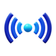
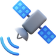

Serviços
Nossos serviços fornecem monitoramento em tempo real dos ecossistemas marinhos, permitindo a detecção precoce de problemas como poluição, destruição de habitats e mudanças climáticas. Isso possibilita ações rápidas e informadas para mitigar danos, proteger a biodiversidade e garantir a sustentabilidade dos oceanos. Além disso, a análise de dados avançada e o engajamento comunitário fortalecem a conservação marinha, promovendo uma resposta coordenada e eficaz às ameaças ambientais.

AquaSense™ - Monitoramento Subaquático Inteligente
Implementação de redes de sensores subaquáticos em locais estratégicos para coletar dados sobre temperatura, salinidade, níveis de oxigênio, poluentes e nutrientes. Este serviço fornece informações críticas em tempo real sobre a saúde dos ecossistemas marinhos.

OceanEye™ - Vigilância por Satélite:
Utilização de satélites para obter imagens de alta resolução e monitorar a superfície dos oceanos. OceanEye™ detecta blooms de algas, mudanças na cor da água e outras anomalias, complementando os dados coletados por AquaSense™.

MarineBrain™ - Análise e Previsão com IA:
Desenvolvimento de algoritmos de inteligência artificial e machine learning para processar grandes volumes de dados, identificar padrões, prever mudanças nos ecossistemas e gerar alertas automáticos. MarineBrain™ transforma dados brutos em insights acionáveis.

BlueGuard™ - Plataforma de Gestão e Decisão:
Uma plataforma centralizada e acessível que apresenta visualização de dados em tempo real, relatórios de saúde dos ecossistemas e ferramentas de apoio à decisão. BlueGuard™ permite a configuração de alertas personalizados e a geração de relatórios automáticos para autoridades, cientistas e comunidades.